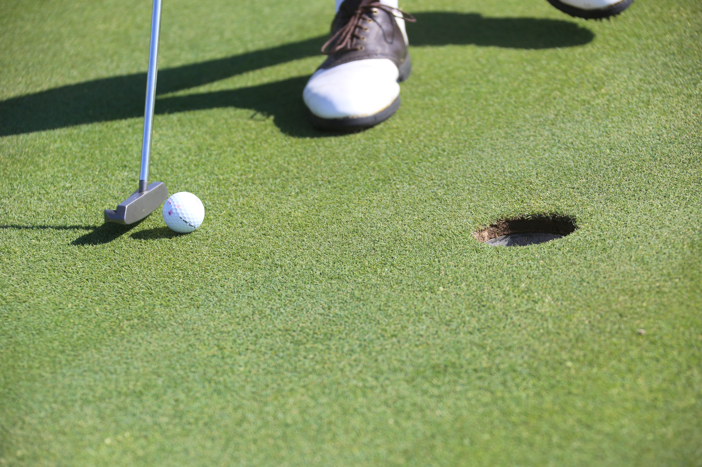

Record
Create a practice session with the date, location, duration, clubs, drills, and notes while the details are still fresh.
Keep a record of your golf practice. See what you worked on, check your results, and plan your next trip to the range.

Create a practice session with the date, location, duration, clubs, drills, and notes while the details are still fresh.
Browse recent sessions and open a detail page to see results like made putts, wedge proximity, or longest drive.
Use practice balance summaries to notice neglected parts of your game and make the next session more deliberate.
A few notes after each session can help you spot what is improving and what needs more practice. Record your drills and results from the range, putting green, or short-game area.